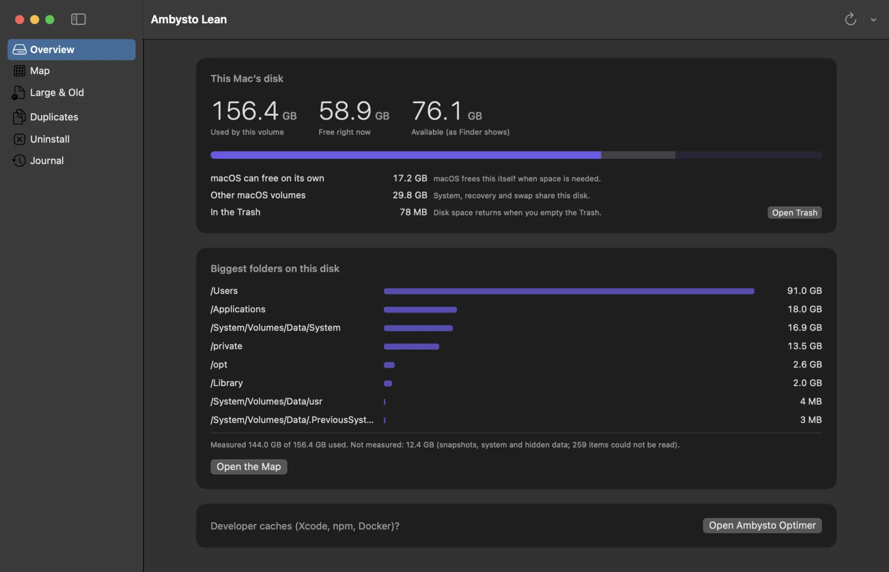
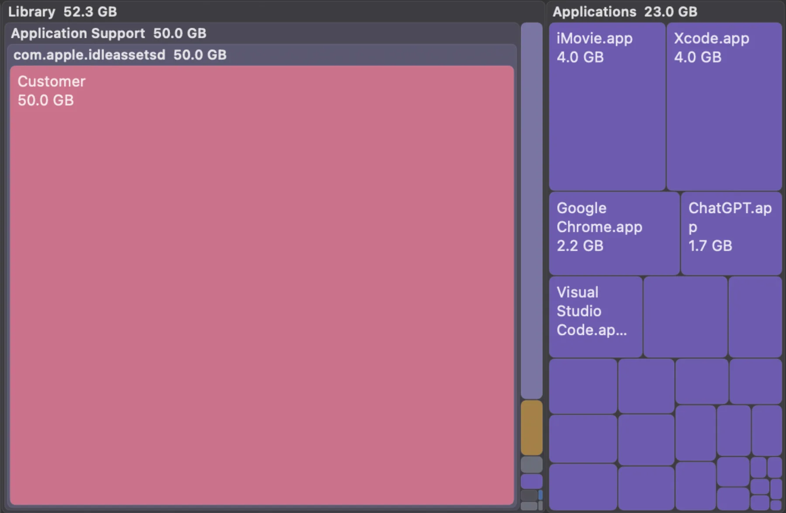
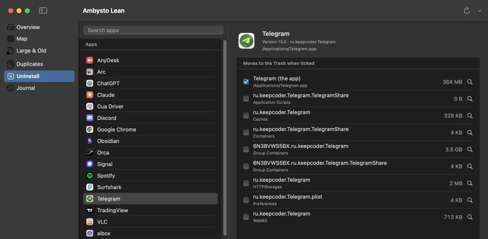

Part of the Ambysto Pro Suite, the jet-pack for every vibeworker
Lean maps your disk, finds the files that cost the most, and moves what you pick to the Trash. Every move is checked first and written down, so you can put it back.
Where did your disk go?
For Mac and Windows. Free.

Finder shows one folder at a time. Apple's Storage pane files the rest under "System Data".
So you find a 40 GB folder and leave it alone. Is it in use? Is there another copy? How do you get it back if you're wrong?
Lean answers those before you delete anything.
Four views. One safety gate.
Every view ends in the same place: you tick rows, Lean checks them, they go to the Trash.
Map
Your whole disk as a treemap. Sizes are what files really take on disk. Folders it can't read get their own tile instead of being skipped quietly.
Large and old
Filter by size and by when you last used a file. It tells you whether the date comes from Spotlight or from the file itself. Nothing is pre-ticked.
Duplicates
Byte-identical files only. Compared byte by byte, never by hash or size alone. Lean suggests the newest copy to keep and selects nothing.
Uninstall
An app and its leftovers in Library, matched by exact bundle ID. "Arc" will never pull in files from "Archive Utility".
See the 50 GB folder.
Big tiles are big files. Click in, right-click to act.
The map is progressive. Tiles appear in the first second and sharpen as the scan goes on. Cancel any time.

Delete the app. Then the rest of it.
Telegram is 364 MB. Its leftovers are another 3.5 GB. Lean lists each one with its size.
Only the app is ticked. Leftovers are your call. A running app is blocked until you quit it.

It says what it didn't measure.
"Measured 144.0 GB of 156.4 GB used. Not measured: 12.4 GB." Snapshots, system data and 259 unreadable items are named, not hidden in a total.
- 1.66Mfiles scanned on a real Mac, whole disk
- 12 sto scan them. First tiles after 0.06 s.
- 356 MBpeak memory during that scan
Development build, warm cache. Your disk and your cache will differ.
What Lean will not do.
The rules are in the spec, not in a settings screen. An update never turns a destructive option on.
- No permanent delete.Everything goes to the Trash. Put back restores it from the journal.
- No guessing at delete time.Path resolved, symlinks not followed, size measured again right before the move.
- No deleting what's in use.If a process has the file open, it's skipped and the process is named.
- No touching what matters.Photos libraries, Mail, Messages, keychains, iCloud Drive, ~/.ssh, Time Machine and system folders can't be selected.
- No password prompts.Items that need admin rights are shown with their size and marked "remove in Finder".
- No uploads.Scans, journal and everything else stay on your Mac. No telemetry.
Free is the whole app.
Reclaiming disk space is never held hostage. Free cleans everything safely. We only charge when you are happy to pay.
| Free · $0 | Pro · $19.99 | |
|---|---|---|
| Map, large and old, duplicates, uninstall | Yes | Yes |
| Move to Trash with every safety check | Yes | Yes |
| Journal and Put back | Last 30 days shown | Everything |
| Export report and journal (Markdown, JSON) | No | Yes |
| Low-disk alert | No | Yes |
| Purchase reminder | Rare banner | None |
Pro adds conveniences, nothing you need to finish the job. One key, verified offline, no subscription. Only pay if Lean brought you peace of mind and you want to support independent development.
Fair ones.
Why does it need Full Disk Access?
Without it, macOS hides folders from the scan and the numbers would be wrong. Lean asks once, explains why, opens the right Settings pane and notices the grant by itself. It reads your disk on this Mac and never uploads anything.
Will it free my purgeable space?
No, and it doesn't count it as savings. macOS releases purgeable space itself when it needs it. Lean shows it so the numbers add up.
Disk space didn't change after I deleted something.
Lean moves files to the Trash, and the space returns when you empty it. It says so after every move, and shows the size it measured just before moving.
Do APFS clones free less than the duplicates list says?
They can. Lean marks those copies "may share storage; moving it may free less" instead of promising a number.
Windows?
Yes, as a preview for Windows 11 24H2 or later (x64), built from the same written spec as the Mac app. Like the Mac app, it moves items to the Recycle Bin and can put them back. No mobile.
Know before you delete.
On a Mac, open the disk image and drag Lean to Applications. On Windows, run the installer.
Version 1.1.2 · macOS 14+ · Apple Silicon and Intel · Free
Preview · Windows 11 24H2+ · x64 · Free
- Tester build. Not notarized by Apple yet, so the first launch is blocked with "Apple could not verify".
- To open it once: System Settings → Privacy & Security, then Open Anyway next to Ambysto Lean.
- Windows preview. Not code-signed yet, so SmartScreen may warn on the first run: choose More info, then Run anyway. It installs for your user, no admin needed.